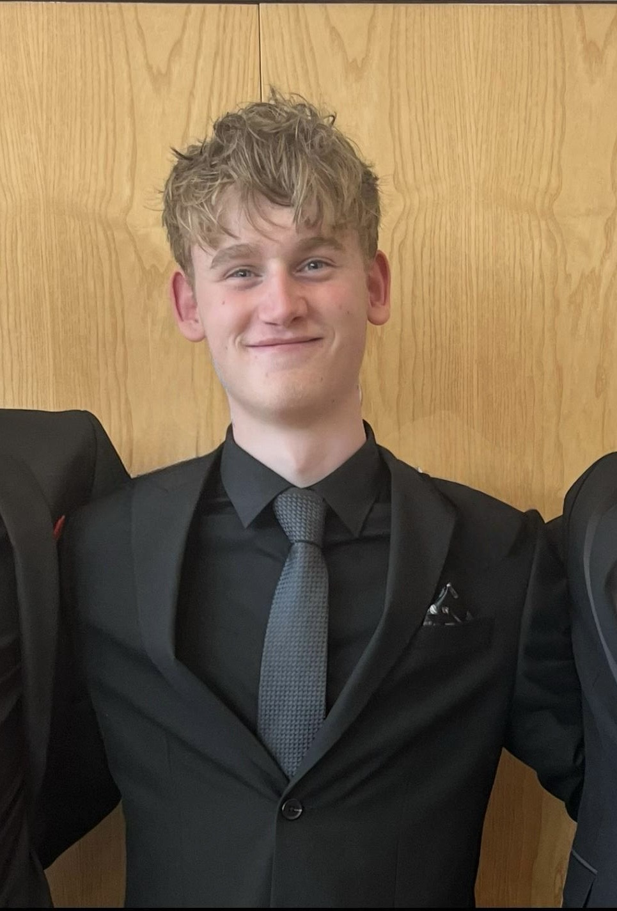

I am a first-year Cyber Security undergraduate driven by a passion for resilient software architecture and secure design. My academic journey has established a strong foundation in programming, specifically in Python and Visual Basic. Beyond the code, I possess practical experience in web development, algorithmic problem solving, and database management.
My goal is to specialize in Cyber Security. Despite not knowing the direct path I want to go down yet, I want to be able to create and design advanced and secure systems through the skills I gain over the years. I am eager to apply my technical knowledge in challenging, real-world environments where precision and rapid decision-making are critical.
I combine technical discipline with proven leadership. Through my work as a 'Pass Coordinator' in a high-pressure hospitality environment and my role as a Sports Leader, I have developed the ability to manage stress and communicate clearly under fire. I don't just write code; I take ownership of outcomes.